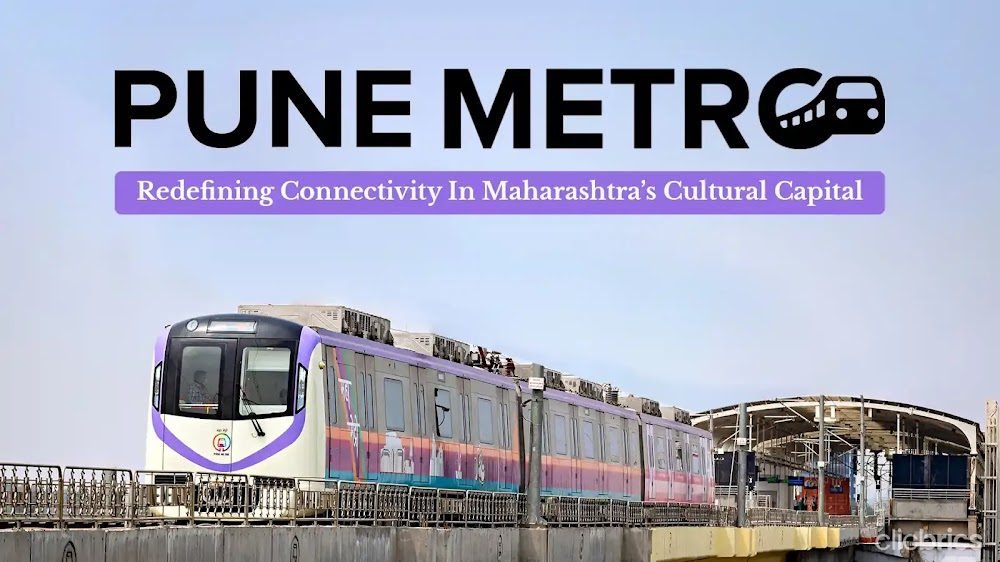

Pune Metro
The Pune Metro is a vital urban transportation system designed to alleviate traffic congestion and enhance connectivity across the city. It offers a modern, efficient, and eco-friendly alternative for daily commutes, connecting key areas and neighborhoods with ease.

Attractions
Pune is a city brimming with historical landmarks, vibrant cultural spots, and scenic retreats. Here are some must-visit attractions that showcase the city's diverse heritage and charm.

Universities
Pune is renowned for its prestigious educational institutions, making it a major hub for higher education in India. The city is home to several top-tier universities and colleges that offer a wide range of programs across various disciplines.